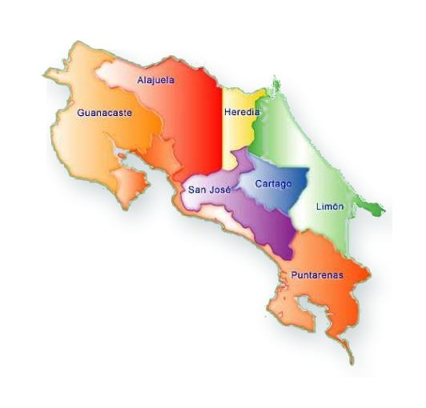

🗺️ EXPLORA UNA PROVINCIA
Explora la provincia disponible en el mapa y comienza tu misión.
FERIA CIENTÍFICA EXPOTEC 2026
¡Hola, explorador! 🧭 Costa Rica tiene 7 provincias llenas de historias, lugares y sorpresas por descubrir.
Tu misión será recorrerlas, encontrar insignias con realidad aumentada, superar retos y conseguir puntos.
🏆 ¿Podrás conquistar las 7 provincias?
INSTRUCCIONES DEL JUEGO
Explora la provincia disponible en el mapa y comienza tu misión.
Cada provincia tiene 5 preguntas. Necesitas responder correctamente al menos 3 de 5.
Con 60 puntos o más desbloqueas la búsqueda de la insignia.
Usa la cámara para buscar la insignia 3D escondida en realidad aumentada.
Encuentra las 7 insignias y completa tu recorrido por Costa Rica.
RUTA NACIONAL
Explora la provincia disponible y continúa tu aventura.

RESULTADO DE LA PROVINCIA
REALIDAD AUMENTADA
Busca la insignia de la provincia y captúrala para completar la misión.
La primera vez necesitamos permiso para usar la cámara. Después reutilizaremos esa autorización en las siguientes provincias.
¡INSIGNIA OBTENIDA!
🛂 PASAPORTE GEOAVENTURAS CR 🇨🇷
Has recorrido las 7 provincias de Costa Rica, superaste sus retos y completaste tu aventura por el país.
¡Felicidades, explorador! Con tus conocimientos, curiosidad y espíritu aventurero lograste completar GeoAventuras CR.
¡Sigue explorando, aprendiendo y descubriendo Costa Rica! 🇨🇷
GeoAventuras CR · EXPOTEC 2026
Se reconoce a
por completar satisfactoriamente el recorrido educativo interactivo de las 7 provincias de Costa Rica.